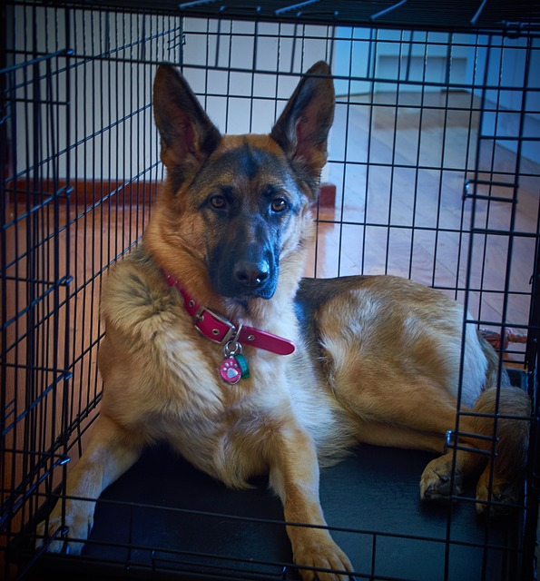
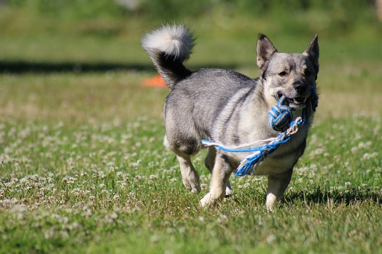

Golden Retriever
Golden Retriever are the most kindest dog breeds

Husky
Husky are known to be very talktive

German Shepard
German Shepards are good guard dogs

belgian malinois
Good police dog
beagle
Good small dog

minature Schnauzer
Minature schnauzer are good dog breed for allegic people

Yorkshire terrier
yorkshire terrier are spoiled little brats

Swedish Vallhund
smart and sociable
xoloitzcuintli
Mexican hairless dog
Welsh corgi
strong and sturdy